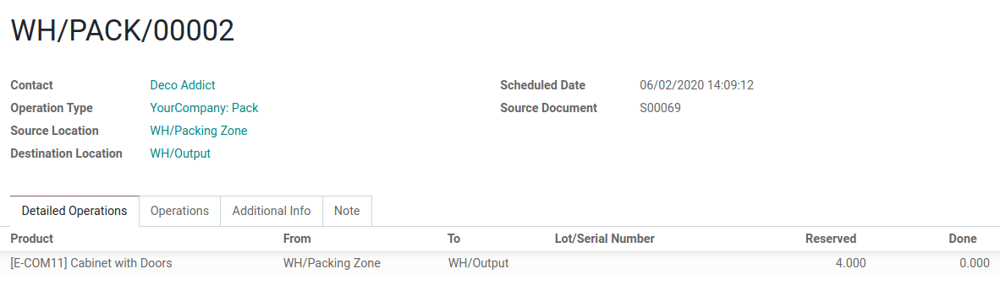

Rutas y reglas push y pull¶
En la gestión de inventario, la estrategia de cadena de suministro determina cuándo se deben comprar o fabricar los productos, cuándo se deben enviar a los centros de distribución y estar disponibles para el canal minorista.
Con Odoo puede configurar la estrategia de cadena de suministro de un producto mediante las rutas, las cuales incluyen las reglas push y pull. Una vez que todo se configuró de forma adecuada, la aplicación Inventario puede generar de forma automática los traslados de acuerdo a las reglas push o pull configuradas.
Dentro del almacén¶
Un almacén genérico cuenta con muelles de recepción, un área de control de calidad, ubicaciones de almacenamiento, áreas de recolección y empaquetado y muelles de envío. Conforme el producto pasa por estas ubicaciones, cada una activa la ruta y reglas específicas del producto.

En este ejemplo, los camiones de los proveedores descargan los palés de productos ordenados en los muelles de recepción. A continuación, los operadores escanean los productos en el área de recepción. Dependiendo de sus rutas y reglas de almacenamiento, algunos productos se envían al área de control de calidad (por ejemplo, productos que se utilizan como componentes en el proceso de fabricación), mientras que otros se almacenan directamente en sus respectivas ubicaciones.

Este es un ejemplo de una ruta logística. Por la mañana se seleccionan los artículos para todas las órdenes que deben prepararse durante el día. Estos artículos se toman de ubicaciones de almacenamiento y se trasladan al área de recolección, cerca de donde se empaquetan las órdenes. Después, las órdenes se empaquetan en sus respectivas cajas, y las cintas transportadoras las llevan a los muelles de envío cuando están listas para su entrega a los clientes.

Reglas pull¶
Con las reglas pull, la demanda de algunos productos activa los aprovisionamientos, mientras que las reglas push se activan debido a productos que llegan a ubicaciones específicas.
Las reglas pull se utilizan para completar órdenes de venta. Odoo genera una necesidad en la ubicación del cliente para cada producto en la orden. Como las necesidades activan las reglas pull, Odoo busca una regla definida en la ubicación del cliente.
En este caso, Odoo encontró una regla pull «orden de entrega» que traslada productos del área de envío a la ubicación del cliente y se crea un traslado entre ambas ubicaciones.
Luego, Odoo encuentra otra regla pull que busca satisfacer la necesidad del área de envío: la regla de «empaquetado» que traslada productos del área de empaquetado al área de envío. Por último, se activan otras reglas pull hasta que se crea un traslado entre las existencias y el área de recolección.
Nota
Odoo genera de forma automática todos estos traslados de productos mediante las reglas pull, empieza por el final (la ubicación del cliente) y va en retroceso (el almacén de existencias). Mientras trabaja, el operador procesa estos traslados en orden inverso: primero la recolección, luego el empaquetado y, por último, la orden de entrega.
Reglas push¶
Por otro lado, las reglas push son más fáciles de entender. En lugar de generar documentos según las necesidades, estas reglas se activan en tiempo real cuando los productos llegan a una ubicación específica. En pocas palabras, las reglas push dicen: «cuando un producto llegue a una ubicación, se debe trasladar a otra».
Un ejemplo de una regla push sería: cuando un producto llega al área de recepción se debe mover a la ubicación de almacenamiento. Como se pueden aplicar distintas reglas push a distintos productos, el usuario puede asignar ubicaciones de almacenamiento diferentes a cada producto.
Otra regla push podría ser: cuando lleguen productos a una ubicación, se deben trasladar al área de control de calidad. Una vez realizado el control de calidad, se deben trasladar a la ubicación de almacenamiento.
Nota
Las reglas push solo se pueden activar si ninguna regla pull generó los traslados de productos.
Importante
Los conjuntos de reglas push y pull se denominan rutas. El grupo en la regla decide si los productos se agrupan en el mismo traslado o no. Por ejemplo, durante la operación de recolección, todas las órdenes y sus productos se agrupan en un traslado, mientras que la operación de empaquetado respeta la agrupación por orden de cliente.
Usar rutas y reglas¶
Dado que las rutas son un conjunto de reglas push y pull, Odoo le ayuda a gestionar la configuración avanzada de rutas como:
Gestionar cadenas de fabricación de productos.
Gestionar ubicaciones predeterminadas por producto.
Definir rutas dentro de sus almacenes de existencias según las necesidades empresariales, como el control de calidad, servicios posventa o devoluciones a proveedores.
Ayudar a la gestión de alquileres al generar movimientos de devolución automatizados para los productos alquilados.
Para configurar una ruta en un producto primero debe acceder a la aplicación Inventario e ir a . Después, en la sección almacén habilite la función rutas multietapa y haga clic en guardar.

Nota
La función ubicaciones de almacenamiento se activa de forma automática al habilitar la función rutas multietapa.
Una vez que complete este paso, el usuario puede utilizar las rutas preconfiguradas de Odoo o crear sus propias rutas personalizadas.
Rutas preconfiguradas¶
Para acceder a las rutas preconfiguradas de Odoo, vaya a y abra el formulario de un almacén. En la pestaña configuración de almacén puede ver las rutas preconfiguradas del almacén para los envíos entrantes y salientes.

También están disponibles rutas más avanzadas, como recolectar-empaquetar-enviar. El usuario puede seleccionar la ruta que mejor se adapte a sus necesidades empresariales. Una vez que establezca las rutas de envíos entrantes y salientes, vaya a para ver las rutas específicas que Odoo generó.

En la página rutas, haga clic en una ruta para abrir su formulario. Ahí, la sección aplicable en le muestra al usuario en dónde se puede aplicar la ruta. También puede configurar la ruta para que solo aplique en una empresa específica. Esto es útil en los entornos multiempresa: por ejemplo, un usuario puede tener una empresa y almacén en el país A y una segunda empresa y almacén en el país B.

Al final del formulario de la ruta, el usuario puede ver las reglas de cada ruta. Cada regla tiene una acción, una ubicación de origen y una ubicación de destino.

Rutas personalizadas¶
Para crear una ruta personalizada, vaya a y haga clic en crear. A continuación, elija dónde se puede seleccionar esta ruta. Una ruta se puede aplicar en una combinación de lugares.

Cada lugar tiene un comportamiento distinto, por lo que es importante seleccionar solo los que son útiles y adaptar cada ruta como corresponde. Después, configure las reglas de la ruta.
Si la ruta se puede aplicar a una categoría de producto, esta se debe establecer de forma manual en el formulario de la categoría de producto en . Después, seleccione la categoría de producto y abra su formulario, haga clic en editar y establezca las rutas en la sección logística.
Al aplicar la ruta a una categoría de producto, todas las reglas configuradas en la ruta se aplican a todos los productos en esa categoría. Esto es útil si la empresa utiliza el proceso de triangulación para todos los productos de la misma categoría.

El mismo comportamiento se aplica a los almacenes. Si la ruta se puede aplicar a los almacenes, todos los traslados que ocurren dentro del almacén seleccionado que cumplen las condiciones de las reglas de la ruta seguirán esa ruta.

Si la ruta se puede aplicar en las líneas de la orden de venta, es más o menos lo contrario. Debe elegir la ruta de forma manual al crear una cotización. Esto es útil si algunos productos utilizan rutas distintas.
Recuerde activar la visibilidad de la columna ruta en la cotización u orden de venta. Después, puede elegir la ruta en cada línea de la cotización u orden de venta.

Por último, hay rutas que se pueden aplicar a productos. Estas funcionan de forma similar a las categorías de productos: una vez seleccionada, la ruta se debe establecer de forma manual en el formulario del producto.
Para establecer una ruta en un producto, vaya a y seleccione el producto deseado. Luego, vaya a la pestaña Inventario y en la sección operaciones seleccione las rutas.

Importante
Debe establecer reglas en la ruta para que funcione.
Reglas¶
Las reglas se definen en el formulario de la ruta. Primero, vaya a y abra el formulario de la ruta a editar. A continuación, haga clic en editar y en la sección reglas, haga clic en agregar una línea.

Las reglas disponibles activan varias acciones. Si Odoo ofrece reglas push y pull, entonces también hay otras disponibles. Cada regla tiene una acción:
Tomar de (pull): esta regla se activa por la necesidad de un producto en una ubicación específica. La necesidad puede venir de una orden de venta validada o de una orden de fabricación que necesita un componente específico. Cuando la necesidad aparece en la ubicación de destino, Odoo genera una recolección para suplirla.
Enviar a (push): esta regla se activa por la llegada de algunos productos en la ubicación de origen definida. En caso de que el usuario mueva productos de la ubicación de origen, Odoo genera una recolección para mover esos productos a la ubicación de destino.
Pull y push: esta regla permite generar recolecciones en las dos situaciones que se explicaron con anterioridad. Es decir, cuando se necesitan productos en una ubicación específica, se crea un traslado desde una ubicación anterior para satisfacer esa necesidad. Esto crea una necesidad en la ubicación anterior y se activa una regla para satisfacerla. Una vez que se satisfaga la segunda necesidad, los productos se envían a la primera ubicación y se satisfacen todas las necesidades.
Comprar: cuando se necesitan productos en la ubicación de destino, se crea una solicitud de cotización para satisfacer la necesidad.
Fabricar: cuando se necesitan productos en la ubicación de origen, se crea una orden de fabricación para satisfacer la necesidad.
También se debe definir el tipo de operación en la regla, esto define qué tipo de recolección se crea a partir de ella.
Si la acción de la regla se configura como tomar de (pull) o pull y push, se debe establecer un método de suministro. El método de suministro define qué sucede en la ubicación de origen:
Tomar de las existencias: los productos se toman de las existencias disponibles en la ubicación de origen.
Activar otra regla: el sistema trata de encontrar una regla de existencias para traer los productos a la ubicación de origen. Se ignoran las existencias disponibles.
Tomar de las existencias, si no hay disponibles, activar otra regla: los productos se toman de las existencias disponibles en la ubicación de origen. Si no hay, el sistema trata de encontrar una regla para traer los productos a la ubicación de origen.
Flujo de ejemplo¶
En este ejemplo utilizaremos una ruta personalizada de recolectar - empaquetar - enviar para probar un flujo completo con una ruta personalizada avanzada.
Observemos las reglas de la ruta y sus métodos de suministro. Tenemos tres reglas, todas son reglas pull. Los métodos de suministro para cada regla son los siguientes:
Tomar de las existencias: cuando se necesitan productos en WH/Zona de empaquetado, se crean recolecciones (traslados internos de WH/Existencias a WH/Zona de empaquetado) en WH/Existencias para satisfacer la necesidad.
Activar otra regla: cuando se necesitan productos en WH/Salida, se crean paquetes (traslados internos de WH/Zona de empaquetado a WH/Salida) en WH/Zona de empaquetado para satisfacer la necesidad.
Activar otra regla: cuando se necesitan productos en ubicaciones de contactos o clientes, se crean órdenes de entrega de WH/Salida para satisfacer la necesidad.

Esto significa que, cuando un cliente ordena productos con una ruta recolectar - empaquetar - enviar establecida, se crea una orden de entrega para satisfacer la orden.

Nota
Aunque el documento de origen de varios traslados sea la misma orden de venta, el estado no es el mismo. El estado será en espera de otra operación si aún no se realiza el estado anterior en la lista.

Para preparar la orden de entrega es necesario que los productos empaquetados estén en el área de salida, por lo que se solicita un traslado interno de la zona de empaquetado.
La zona de empaquetado necesita productos listos para empaquetarse. Por lo tanto, se solicita un traslado interno para las existencias y los empleados pueden recolectar los productos necesarios del almacén.

Como se explicó en la introducción de este documento, el último paso del proceso (en el caso de esta ruta, la orden de entrega) es el primero que se debe activar, y este activa otras reglas hasta llegar al primer paso en el proceso (en este caso, el traslado interno de las existencias al área de empaquetado). Ahora todo está listo para procesarse y el cliente pueda recibir los productos que ordenó.
En este ejemplo, el producto se entrega a los clientes cuando se han activado todas las reglas y se han realizado todos los traslados.